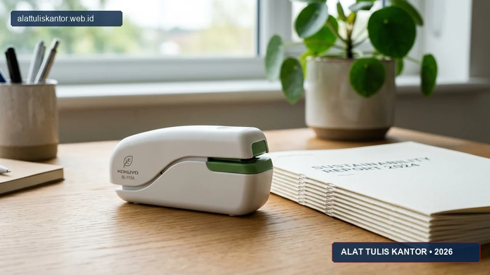
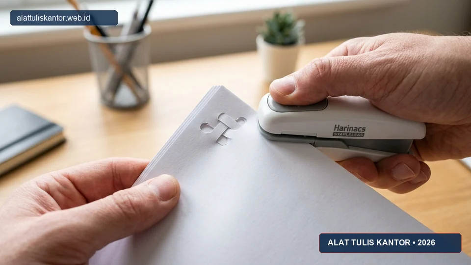

Stapler tanpa isi atau stapleless stapler adalah inovasi ATK yang mulai banyak dilirik perusahaan yang menerapkan kebijakan kantor ramah lingkungan, karena alat ini mampu menyatukan beberapa lembar kertas tanpa menggunakan staples logam sama sekali. Selain mengurangi limbah logam dari staples bekas, penggunaan stapler tanpa isi juga memudahkan proses daur ulang kertas karena tidak perlu memisahkan staples logam terlebih dahulu sebelum kertas dapat didaur ulang.
Artikel ini membahas cara kerja, kelebihan, dan keterbatasan stapler tanpa isi sebagai solusi ATK eco-friendly untuk kantor Anda, lengkap dengan pertimbangan kapan sebaiknya alat ini digunakan dan kapan stapler konvensional masih lebih sesuai. ATK Prima Distribusi menyediakan stapler tanpa isi sebagai bagian dari inisiatif paket pengadaan ATK ramah lingkungan kami. Konsultasi dapat dilakukan via WhatsApp di 088989643555.
Inovasi Kantor Berkelanjutan: Mengganti staples logam dengan mekanisme interlock kertas mengeliminasi risiko luka goresan logam, memangkas biaya pembelian isi staples tahunan, serta mempercepat proses pemilahan dokumen daur ulang.
Ringkasan Mengenal Stapler Tanpa Isi (Stapleless)
Stapler tanpa isi bekerja dengan mekanisme memotong sebagian kecil kertas membentuk lidah kecil (tab), kemudian menekuk dan menyelipkan lidah tersebut ke dalam celah yang dibuat pada lembar kertas lain, sehingga beberapa lembar kertas dapat menyatu tanpa memerlukan staples logam sama sekali.
Alat ini ideal untuk menyatukan 2-5 lembar kertas ringan seperti nota, memo, atau dokumen sementara, namun memiliki keterbatasan kapasitas dan daya rekat yang tidak sekuat stapler heavy duty konvensional untuk dokumen tebal atau yang membutuhkan penjilidan permanen.
Mengapa Stapler Tanpa Isi Mendukung Kebijakan Kantor Ramah Lingkungan
Penggunaan staples logam dalam jumlah besar setiap tahun berkontribusi terhadap limbah logam kecil yang sulit didaur ulang secara terpisah, sekaligus menghambat proses daur ulang kertas kantor karena staples harus dipisahkan terlebih dahulu sebelum kertas dapat diproses ulang oleh mesin penggiling.
Stapler tanpa isi menghilangkan kebutuhan ini sepenuhnya, sehingga kertas yang dijilid dengan metode ini dapat langsung masuk ke mesin shredder atau tempat sampah daur ulang tanpa proses pemisahan tambahan yang menyita waktu staf kebersihan atau administrasi.
Cara Kerja Stapler Tanpa Isi
1. Mekanisme Pemotongan dan Penyelipan
Saat ditekan, stapler tanpa isi memotong sebagian kecil kertas pada dua titik yang berdekatan, menciptakan lidah kecil yang masih menempel pada kertas. Lidah ini kemudian ditekuk melalui celah yang dibuat pada lembar kertas di bawahnya, menciptakan ikatan mekanis tanpa memerlukan bahan tambahan apa pun.
2. Kapasitas dan Batasan Ketebalan
Sebagian besar stapler tanpa isi dirancang untuk kapasitas 2-5 lembar kertas standar (70-80 gsm), jauh lebih rendah dibanding stapler konvensional yang dapat menangani puluhan hingga ratusan lembar tergantung gramasi dan ukuran kertas yang digunakan.

Kelebihan dan Keterbatasan Stapler Tanpa Isi
Kelebihan Stapler Tanpa Isi
- Tanpa Limbah Logam: Tidak menghasilkan limbah logam sama sekali, mendukung kebijakan kantor ramah lingkungan dan sertifikasi gedung hijau (Green Building).
- Langsung Didaur Ulang: Kertas yang dijilid dapat langsung didaur ulang atau dihancurkan mesin penghancur kertas (paper shredder) tanpa risiko merusak mata pisau mesin.
- Aman Tanpa Benda Tajam: Lebih aman digunakan karena tidak ada staples logam tajam yang berisiko melukai tangan staf atau anak-anak di sekolah.
- Bebas Biaya Isi Ulang: Tidak perlu membeli dan menyimpan stok staples, mengurangi kebutuhan pengadaan tambahan dan kerumitan manajemen inventaris ATK.
Keterbatasan Stapler Tanpa Isi
- Kapasitas Terbatas: Hanya cocok untuk 2-5 lembar kertas ringan, tidak untuk dokumen tebal, proposal proyek, atau bundel laporan.
- Daya Rekat Sedang: Daya rekat tidak sekuat staples logam, berisiko terlepas jika lembaran kertas ditarik dengan tenaga cukup besar.
- Meninggalkan Bekas Lubang/Lipatan: Meninggalkan bekas potongan kecil pada kertas yang tidak dapat dihilangkan setelah proses penjilidan.
- Kurang Cocok untuk Arsip Legal Permanen: Tidak cocok untuk dokumen yang membutuhkan penjilidan permanen jangka panjang seperti akta notaris, kontrak kerja sama, atau arsip pajak keuangan.
Tabel Perbandingan: Stapler Tanpa Isi vs Stapler Konvensional
| Parameter | Stapler Tanpa Isi (Stapleless) | Stapler Konvensional |
|---|---|---|
| Kapasitas Kertas | 2-5 lembar (kertas 70-80 gsm) | 10-130+ lembar tergantung jenis & ukuran |
| Limbah yang Dihasilkan | Tidak ada (tanpa staples logam) | Ada, staples logam bekas |
| Kemudahan Daur Ulang Kertas | Langsung bisa didaur ulang / shredder | Perlu pemisahan staples logam terlebih dahulu |
| Daya Rekat / Kekuatan Jilid | Sedang, untuk penggunaan ringan & sementara | Kuat, untuk penggunaan permanen jangka panjang |
| Estimasi Harga Satuan | Rp45.000 - Rp90.000 | Rp15.000 - Rp180.000 tergantung tipe/kapasitas |
| Biaya Operasional Lanjutan | Rp 0 (tidak butuh refill) | Rutin membeli kotak isi staples (refill) |
Kapan Sebaiknya Menggunakan Stapler Tanpa Isi
- Menyatukan Dokumen Ringan Harian: Sangat pas untuk nota pengeluaran, memo internal, tiket perbaikan, atau catatan rapat sementara yang tidak memerlukan pengarsipan jangka panjang.
- Dokumen Siklus Daur Ulang Cepat: Cocok untuk draf kerja cetak atau kertas coretan yang direncanakan akan langsung didaur ulang setelah selesai dibaca.
- Penerapan Kantor Hijau & Sertifikasi ESG: Kantor yang ingin mengurangi jejak limbah operasional sebagai bagian dari kepatuhan ESG atau sertifikasi ISO 14001.
- Lingkungan Kerja Ramah Anak & Pendidikan: Area kerja dan ruang kelas sekolah serta kampus yang mengutamakan keamanan dari benda tajam untuk siswa PAUD dan TK.
Kapan Tetap Perlu Menggunakan Stapler Konvensional
Untuk dokumen yang membutuhkan penjilidan permanen dan tahan lama seperti kontrak legal, arsip perpajakan, berkas audit pemeriksaan, atau laporan tebal yang akan disimpan bertahun-tahun di dalam ordner dan map, stapler konvensional dengan staples logam tetap menjadi pilihan yang lebih andal karena daya rekatnya jauh lebih kuat dan tidak berisiko terlepas dalam jangka panjang.
Pendekatan yang paling bijak dan efisien adalah mengombinasikan kedua jenis stapler sesuai kebutuhan masing-masing divisi dan jenis dokumen, bukan menggantikan seluruh stapler konvensional secara ekstrem.
Mengintegrasikan Stapler Tanpa Isi dalam Kebijakan Kantor Hijau
Stapler tanpa isi dapat menjadi salah satu elemen pelengkap dalam kebijakan kantor hijau yang lebih luas, bersama dengan strategi lain seperti pencetakan bolak-balik (duplex printing), pengurangan penggunaan kertas berlebih, dan pengadaan produk ATK isi ulang (refillable).
Sosialisasikan penggunaan stapler tanpa isi untuk dokumen-dokumen ringan sehari-hari kepada seluruh karyawan, sambil tetap menyediakan perlengkapan stapler standar di meja kerja administrasi untuk kebutuhan dokumen yang memang memerlukan penjilidan permanen. Dengan demikian, transisi menuju kantor yang lebih ramah lingkungan dapat berjalan mulus tanpa mengorbankan fungsionalitas arsip penting.
Studi Kasus: Inisiatif Hijau PT Media Kreasi Nusantara
PT Media Kreasi Nusantara menerapkan penggunaan stapler tanpa isi untuk seluruh dokumen internal ringan seperti memo dan draf kerja, sebagai bagian dari komitmen keberlanjutan lingkungan mereka.
Dalam satu tahun penerapan, perusahaan mencatat pengurangan penggunaan staples logam hingga lebih dari 60 persen untuk kategori dokumen ringan, sekaligus mempermudah proses daur ulang kertas bekas kantor yang sebelumnya harus melalui proses pemisahan staples secara manual oleh petugas kebersihan.
Dampak Efisiensi Nyata: Inisiatif ini memangkas waktu kerja pemilahan arsip kertas sebesar 35 jam per tahun dan mencegah puluhan ribu butir staples logam berakhir di tempat pembuangan akhir.
Cara Memesan Stapler Tanpa Isi dan Kertas HVS Grosir Ramah Lingkungan
Untuk melihat katalog lengkap produk ATK ramah lingkungan termasuk stapler tanpa isi dan penjepit kertas serta kebutuhan pasokan kertas HVS grosir berkualitas, Anda dapat mengunjungi kategori produk kami.
Anda juga dapat menjelajahi seluruh katalog produk ATK korporat kami atau memilih kombinasi paket ATK kantor untuk solusi kantor hijau yang efisien dan hemat anggaran.
Mempertimbangkan Total Cost of Ownership Stapler Tanpa Isi
Meskipun harga beli awal stapler tanpa isi cenderung lebih tinggi dibanding stapler standar ukuran kecil, perlu diperhitungkan bahwa penggunaan jangka panjang tidak memerlukan pembelian staples berulang, yang pada akhirnya dapat mengimbangi selisih harga awal tersebut, terutama untuk kantor dengan volume penggunaan tinggi untuk dokumen ringan.
Hitung total biaya kepemilikan (total cost of ownership) dengan membandingkan harga stapler ditambah estimasi biaya kotak isi staples selama masa pakai stapler standar, dibandingkan dengan harga stapler tanpa isi yang tidak memerlukan biaya tambahan staples sama sekali.
Selain penghematan biaya langsung, pertimbangkan juga nilai tidak berwujud seperti citra positif perusahaan sebagai organisasi yang peduli lingkungan, yang dapat menjadi nilai tambah dalam komunikasi dengan klien atau mitra bisnis yang juga mengutamakan aspek keberlanjutan dalam memilih rekanan kerja.
Menghitung Dampak Lingkungan dari Peralihan ke Stapler Tanpa Isi
Bagi perusahaan yang ingin melaporkan dampak keberlanjutan sebagai bagian dari laporan tanggung jawab sosial (CSR/ESG), peralihan ke stapler tanpa isi dapat dikuantifikasi secara sederhana dengan menghitung estimasi jumlah staples yang biasanya digunakan per tahun dikalikan berat rata-rata satu staples, untuk mendapatkan estimasi total limbah logam yang berhasil dihindari.
Data ini dapat menjadi bagian dari narasi keberlanjutan perusahaan yang disampaikan kepada pemangku kepentingan, termasuk klien dan investor yang semakin memperhatikan aspek lingkungan dalam menilai kredibilitas sebuah organisasi.
Selain manfaat kuantitatif, pertimbangkan juga untuk mendokumentasikan proses transisi ini sebagai studi kasus internal yang dapat menjadi inspirasi bagi inisiatif keberlanjutan lain di masa mendatang, sekaligus membangun kesadaran karyawan bahwa perubahan kecil dalam kebiasaan kerja sehari-hari dapat memberikan kontribusi nyata terhadap tujuan keberlanjutan perusahaan secara keseluruhan.
Pertanyaan yang Sering Diajukan (FAQ)
Kesimpulan
Stapler tanpa isi menawarkan solusi ATK ramah lingkungan yang menarik untuk kebutuhan penjilidan dokumen ringan sehari-hari, meskipun tetap memiliki keterbatasan kapasitas dan daya rekat dibanding stapler konvensional. Dengan menggunakan kedua jenis stapler sesuai kebutuhan masing-masing dokumen, kantor dapat mengurangi jejak limbah logam sekaligus mempertahankan keandalan penjilidan untuk dokumen yang membutuhkan daya tahan jangka panjang.
Butuh stapler tanpa isi dan produk ATK ramah lingkungan lainnya untuk kantor Anda? Hubungi tim ATK Prima Distribusi via WhatsApp di 088989643555 atau kunjungi halaman kontak kami untuk konsultasi pengadaan kantor Anda, dengan jangkauan pengiriman aktif se-Jabodetabek dan seluruh Indonesia.